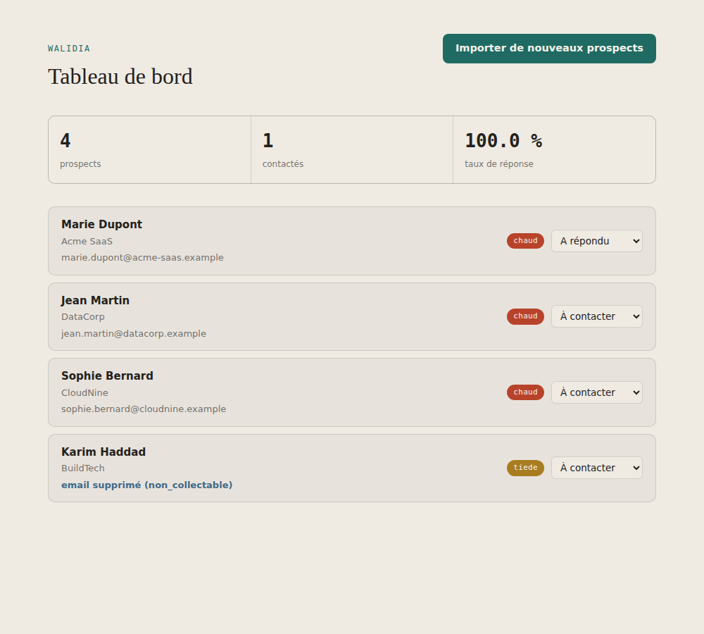

100 % gratuit · local · conforme RGPD
Un outil qui enrichit tes prospects, génère des messages personnalisés, les classe chaud / tiède / froid et suit tes contacts — sans jamais envoyer tes données ailleurs que sur ton propre ordinateur.

Six briques indépendantes, chacune testée séparément. Tu peux les piloter depuis l'interface web ou en ligne de commande.
Vérifie la base légale de chaque email, cherche le numéro public de l'entreprise, rédige un message email et LinkedIn personnalisés.
Classe chaque prospect selon des règles vérifiables, affinées par IA.
Repère des signaux d'achat publics (recrutement, actualité) sur le site d'une entreprise, sans rien inventer.
Volontairement pas encore codée : aucun email n'est envoyé automatiquement, pour éviter tout envoi mal configuré.
Journal SQLite de qui a été contacté, quand, et avec quel résultat — reste sur ta machine.
Chiffres clés de la chaîne : prospects traités, taux de réponse, répartition des scores.
Aucune IA payante requise. L'outil détecte automatiquement le meilleur moteur disponible sur ta machine : Ollama en local en priorité (gratuit à vie, aucun compte), sinon Claude si tu configures une clé (payant), sinon un mode sans IA où le scoring par règles continue de fonctionner normalement.
Tout tourne sur ta machine. Rien n'est envoyé à un serveur tiers.
pip install -r requirements.txtpython interface_web/app.py — ouvre ton navigateur automatiquement